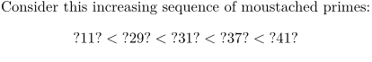

Contents
Summary
The command \definefontfallback is used to setup fonts for missing characters in the main font.
Settings
| \definefontfallback[...][...][...,...][...=...,...] | |
| [...] | name |
| [...] | font name |
| [...,...] | name number |
| rscale | number |
| force | yes no |
| check | yes no |
| offset | number name |
| target | number name |
| features | name |
| factor | number |
| method | lowercase uppercase |
| Option | Explanation | ||
|---|---|---|---|
| a typescript identifier to use with \definefontsynonym | |||
| the font to be used for the fallbacks | |||
| unicode character ranges or unicode block name(s) | |||
| options | |||
| rscale |
|
||
| force |
|
||
| check |
|
||
| features |
|
||
Description
This command allows to define fallback fonts for certain glyphs which are not found in the main font. The command takes four arguments where the last one is optional. The third argument (Unicode ranges) may be either a comma separated list of slots, or a a range with the syntax
code|1=slot-slot
or one of the mnemonic names from the following table.
Examples
Moustache brackets
We load the moustache brackets from XITS Math because they are not available in Latin Modern Math, which is the default math font. Of course, the technique also works for text fonts (but not in this page).
-
\definefontfallback [xits-fallback] [file:xits-math.otf] [023B0,023B1] \definefontsynonym [MathRoman] [modern] [fallbacks=xits-fallback] Consider this increasing sequence of moustached primes: \startformula \lmoustache 11 \rmoustache < \lmoustache 29 \rmoustache < \lmoustache 31 \rmoustache < \lmoustache 37 \rmoustache < \lmoustache 41 \rmoustache \stopformula
- 
Emojis
Our main fonts doesn’t contain emojis, so we want to take them from a specialized font. And since emojis are spread over several Unicode blocks, we just say “take every unknown glyph from that emoji font” (which doesn’t work for all symbols, of course).
\definefontfallback[emojifallback] [name:EmojiOneColor][0x00000-0xFFFFF][check=yes,force=no] \definefontsynonym [Serif] [Pagella] [features=default,fallbacks=emojifallback]